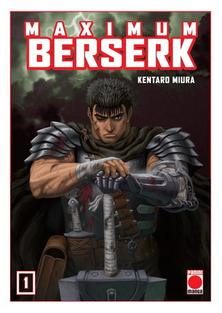

Berserk Maximum Tomo 1
Autor: Kentaro Miura
Editorial: Panini Manga
Precio: $25.000
El inicio de la legendaria obra de Kentaro Miura. En esta edición Maximum encontrarás páginas ampliadas y la experiencia definitiva de uno de los mangas más icónicos de todos los tiempos.